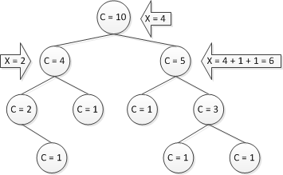

Декартово дерево по неявному ключу¶
Основная идея¶
Возьмем структуру данных динамический массив. В её стандартной реализации мы умеем добавлять элемент в конец вектора, узнавать значение элемента, стоящего на определенной позиции, изменять элемент по номеру и удалять последний элемент. Предположим, что нам необходима структура данных с вышеуказанными свойствами, а также с операциями: добавить элемент в любое место (с соответствующим изменением нумерации элементов) и удалить любой элемент (также с соответствующим изменением нумерации). Такую структуру можно реализовать на базе декартового дерева, результат часто называют декартово дерево по неявному ключу (англ. Treap with implicit key).
Ключ X¶
Как известно, декартово дерево — это структура данных, объединяющая в себе бинарное дерево поиска и бинарную кучу. При реализации же декартова дерева по неявному ключу модифицируем эту структуру. А именно, оставим в нем только приоритет \(Y\), а вместо ключа \(X\) будем использовать следующую величину: * количество элементов в нашей структуре, находящихся левее нашего элемента*. Иначе говоря, будем считать ключом порядковый номер нашего элемента в дереве, уменьшенный на единицу.
Заметим, что при этом сохранится структура двоичного дерева поиска по этому ключу (то есть модифицированное декартово дерево так и останется декартовым деревом). Однако, с этим подходом появляется проблема: операции добавления и удаления элемента могут поменять нумерацию, и при наивной реализации на изменение всех ключей потребуется \(O(n)\) времени, где \(n\) — количество элементов в дереве.
Вспомогательная величина С¶
Решается эта проблема довольно просто. Основная идея заключается в том, что такой ключ \(X\) сам по себе нигде не хранится. Вместо него будем хранить вспомогательную величину \(C\): * количество вершин в поддереве нашей вершины * (в поддерево включается и сама вершина). Обратим внимание, что все операции с обычным декартовым деревом делались сверху. Также заметим, что если по пути от корня до некой вершины просуммировать все такие величины в левых поддеревьях, в которые мы не пошли, увеличенные на единицу, то придя в саму вершину и добавив к этой величине количество элементов в её левом поддереве, мы получим как раз ее ключ \(X\).
Операции, поддерживающие структуру декартова дерева¶
Структура обычного декартова дерева поддерживается с помощью двух операций: \(split\) — разбиение одного декартова дерева на два таких, что в одном ключ \(X\) меньше, чем заданное значение, а в другом — больше, и \(merge\) — слияние двух деревьев, в одном из которых все ключи \(X\) меньше, чем во втором. С учетом отличий декартова дерева по неявному ключу от обычного, операции теперь будут описываться так: \(split(root,t)\) — разбиение дерева на два так, что в левом окажется ровно t вершин, и \(merge(root1,root)\) — слияние двух любых деревьев, соответственно.
Split¶
Пусть процедура \(split\) запущена в корне дерева с требованием отрезать от дерева k вершин. Также известно, что в левом поддереве вершины находится \(l\) вершин, а в правом \(r\). Рассмотрим все возможные случаи:
\(l>=k\). В этом случае нужно рекурсивно запустить процедуру split от левого сына с тем же параметром \(k\). При этом новым левым сыном корня станет правая часть ответа рекурсивной процедуры, а правой частью ответа станет корень.
\(l<k\) Случай симметричен предыдущему. Рекурсивно запустим процедуру split от правого сына с параметром \(k−l−1\). При этом новым правым сыном корня станет левая часть ответа рекурсивной процедуры, а левой частью ответа станет корень.
pair<Node *, Node *> split(Node *t, ll k) {
if (!t) return {nullptr, nullptr};
int l = t -> left -> size;
if (l >= k) {
auto result = split(t -> left, k);
auto t1 = result.first;
auto t2 = result.second;
t -> left = t2;
update_size(t);
return {t1, t};
} else {
auto result = split(t -> right, k - l - 1);
auto t1 = result.first;
auto t2 = result.second;
t -> right = t1;
update_size(t);
return {t, t2};
}
}
Merge¶
Посмотрим любую из реализаций процедуры merge. Заметим, что в ней программа ни разу не обращается к ключу \(X\). Поэтому реализация процедуры merge для декартова дерева по неявному ключу вообще не будет отличаться от реализации той же процедуры в обычном декартовом дереве.
Поддержание корректности значений C¶
Единственное действие, обеспечивающее корректность этих значений заключается в том, что после любого действия с детьми вершины нужно записать в ее поле \(C\) сумму этих значений в ее новых детях, увеличенную на единицу.
Псевдокод:
void update(Treap t)
t.size = 1 + t.left.size + t.right.size